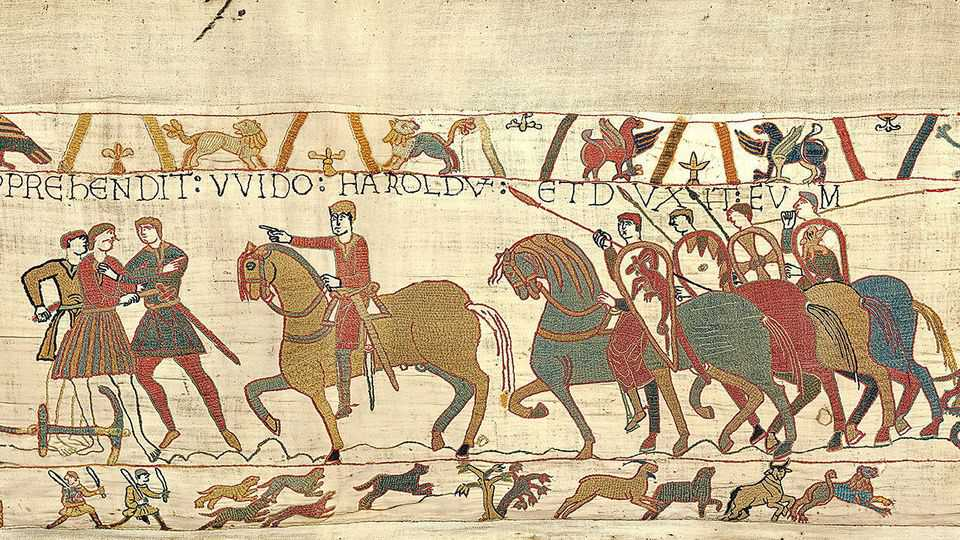

What the Bayeux tapestry teaches about surviving against the odds
A 950-year-old piece of linen yields lessons for modern viewers

Sep 3rd 2026
Days before the liberation of Paris in 1944, Heinrich Himmler, Hitler’s SS chief, sent an urgent coded message. “Do not forget to bring the Bayeux tapestry to a place of safety,” he urged the city’s Nazi commander, who surely had other things to worry about. The Nazis were obsessed with this artwork depicting the Norman conquest of England, seeing it as an icon of Aryan glory. Himmler planned to display it in Wewelsburg Castle, an SS hangout he hoped would become the “centre of the new world”. Instead, British codebreakers intercepted the order and shared it with the French resistance, who hid the tapestry in the Louvre’s basement.
Trajan had his column. Napoleon had his arch. William of Normandy’s tapestry is less imposing yet somehow more memorable. Its strip-cartoon style is jaunty, memeable and has been used to satirise everything from Brexit negotiations to Andy Burnham’s “Northern conquest” (the man he replaced as Britain’s prime minister, Sir Keir Starmer, was pictured on the cover of the New Statesman with an arrow in his eye, like the hapless King Harold). Now the tapestry is back in England for the first time since it was stitched, probably by defeated Anglo-Saxons in Canterbury, nearly 1,000 years ago. It will be on view at the British Museum from September 10th. It offers three lessons for modern viewers.
First, to survive against the odds, it is sometimes best not to attract too much attention. For several centuries the tapestry is believed to have been rolled up, stored in a chest and brought out just once a year, to be displayed in the nave of Bayeux cathedral. For about two-thirds of its existence, it was not famous at all. Only in the early 1700s did a broader audience start noticing it. Its low profile helped ensure its safety.
So did humble materials: linen and woollen thread. Many tapestries from the Middle Ages boasted gold and silver threads or were adorned with pearls and gemstones to catch the flickering candlelight. If you haven’t seen or heard of many of them, that is because they no longer survive. Their costly decoration made them vulnerable to being pinched or sold for parts. Even today, bling can bring trouble. Some of France’s crown jewels were stolen from the Louvre last year; last week a royal diamond necklace was nicked from a museum in Vienna. No thieving hands have touched the Bayeux tapestry. (Admittedly, it is hard to steal something as long as a Boeing 747.)
The second lesson is that it helps to have capable people looking out for you. When French revolutionaries eyed the tapestry to cover wagons carrying ammunition, it took the pleas of a French lawyer, and the bribe of alternative materials, to stop them. During the Franco-Prussian war, caretakers helped preserve the tapestry by keeping it locked up and hidden in a zinc cylinder. The French resistance members who saved the tapestry from the Nazis were not fighting on Normandy beaches, but they were fighting over Norman heritage.
The third lesson comes from the story the tapestry tells: it is about grace in victory. The tapestry is war propaganda, probably commissioned by Bishop Odo to glorify his half-brother’s feats at the Battle of Hastings in 1066. Yet its version of events is surprisingly sensitive to the defeated English—perhaps because there were rebellions in England in the aftermath of the battle, and it did no good to pick at the wounds of the wounded. The tapestry does not play down the horrors of war. Nor does it gloat, grave dance or call the English “losers”.
Leaders who chase attention, slather their monuments in bling, treat foreigners with contempt and constantly boast of victories they never won, should pay heed. A thousand years on, William is remembered as “the Conqueror”. What label will stick to today’s mighty rulers when they are gone? ■